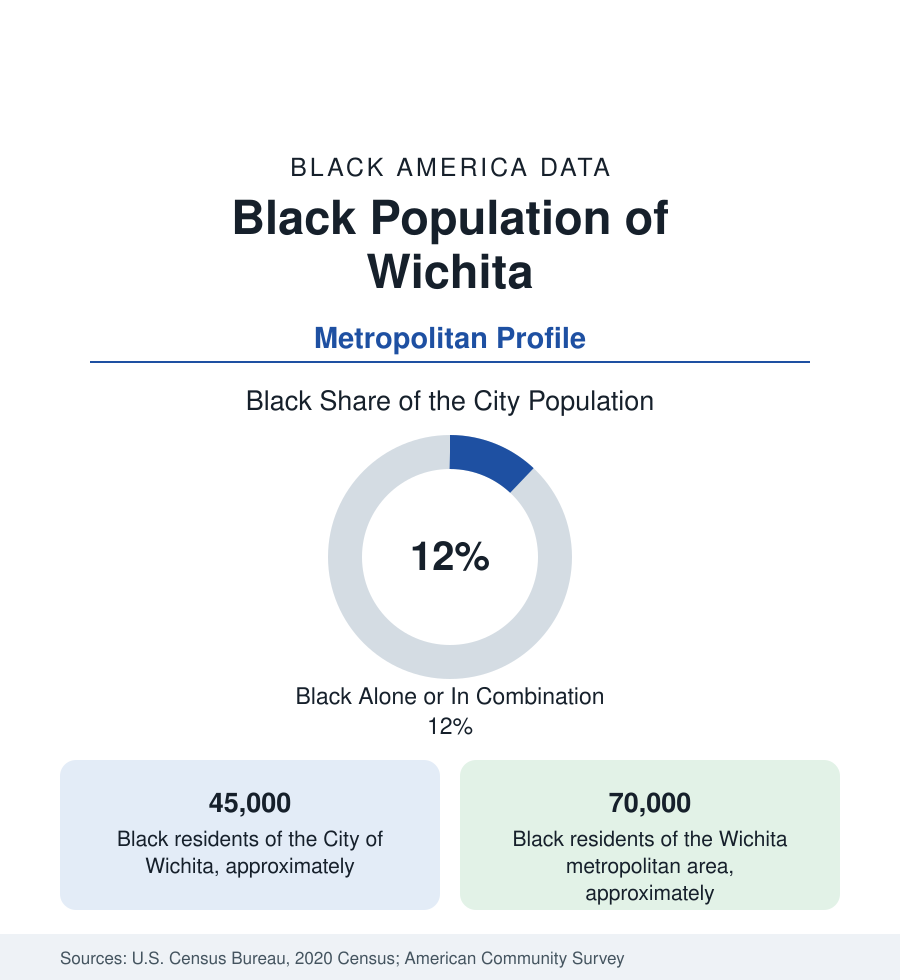

Black Cities
Black Wichita: The Air Capital's Northeast Side
Wichita holds about 45,000 Black residents in the city and 70,000 across the metro — an aircraft town's compact Black community. The census profile.

Wichita holds about 45,000 Black residents within the city — Black alone or in combination, roughly an eighth of its 390,000 people — and about 70,000 across the metropolitan area. The Air Capital of the World built its Black community on the aircraft plants and the railroads, in the northeast quadrant of a plains grid, and its data describe one of the interior's most compact and institutionally complete mid-size Black communities.
The Northeast Quadrant and McAdams
Black Wichita's geography is the city's northeast: the districts around McAdams Park (the community's recreational heart since the segregation era — its pool and ballfields the civic center of Black Wichita summers), the Murdock and Northeast Heights corridors, the Atwater and Fairmount layers, and the modern extensions toward 29th Street and the K-96 corridor. The historic core near downtown (the old Douglas and Waterman blocks) thinned with the clearance era; Wichita State University's campus sits at the quadrant's western edge, its Black enrollment and the Shockers' athletic integration history (the university's teams were integration pioneers in the Valley) part of the community's record. The Dockum sit-in of 1958 — Wichita's Black youth, organized through the NAACP youth council, desegregating the Rexall chain's lunch counters two years before Greensboro, one of the movement's first successful student sit-ins — is the city's place in the civil rights data, commemorated at the site and in the Kansas African American Museum downtown.
The Aircraft Economy's Cycles
Wichita's Black workforce was built by the plants: Boeing's Wichita works (the B-52 lines, the wartime hiring that drew the Great Migration's plains stream), Cessna, Beech, and Learjet's general-aviation cluster, and their supplier web — a manufacturing base whose union contracts carried Black families into the plains' middle class for two generations. The cycle data are the profile's spine: Boeing's departure (the plant's closure in the 2010s ended the military line), Spirit AeroSystems' succession on the same ground (the 737 fuselage works, the region's largest employer), Textron Aviation's cycles, and the general downturn-and-recovery rhythm of aviation manufacturing writing itself into the northeast side's income series with every program decision in Seattle and Washington. The health systems, Wichita State, McConnell Air Force Base at the city's southeast edge, and the rail and grain economy complete the structure.
Indicators and Institutions
The indicators are the mid-size interior's standard split: Black Wichita's median income below the Texas and coastal metros, homeownership deep in the northeast subdivisions (the postwar ranch districts aging into their second owners), poverty concentrated in the older northeast tracts nearest the core. Institutions run complete for the population's size: the Kansas African American Museum (housed in the old Calvary Baptist church), the Urban League, a Black church geography centered on the northeast corridors, the Wichita Defender's successor publications, and a Black elected presence in city and Sedgwick County government proportionate to the community. The school data (Wichita USD 259, the state's largest district, its Black enrollment around a fifth) carry the quadrant's schools as the district's equity file.
Change and the Estimates
The estimates show the metro's slow growth mirrored in its Black population — the northeast suburbs and the Derby and Park City edges gaining, the core quadrant stable, and the Maize and Goddard school-district suburbs (the metro's growth frontier) recording small but rising Black shares. The aviation cycle remains the master variable: Spirit's fortunes on the Boeing programs' rebound are, in the employment data, the northeast side's business cycle. The refugee and immigrant layers (Wichita is a modest resettlement site) diversify the quadrant's newer blocks.
Reading the Wichita Numbers
The cultural layer is anchored by the McAdams Park summer economy and one of Black America's distinctive music footnotes: Wichita's jazz and soul scene of the plant era fed musicians into the national bands, and the city's rhythm-and-blues clubs along the northeast corridors were the touring circuit's plains stop — a heritage the museum's exhibits document against the aircraft town's better-known noise.
Wichita is the compact plains profile: 45,000 people, one quadrant, a full institutional set, and an economy hostage to a single industry's sky. Its Black community desegregated lunch counters before it was famous to do so and built a middle class on bombers and business jets — the data of a small city that keeps appearing, on inspection, at the front of the national story.
More in Black Cities
Black Atlanta: Population, Distribution, and Growth of a Black Metropolis
Metro Atlanta holds more than two million Black residents — roughly one in three, second only to New York. The suburban distribution, migration history, and composition of Black Atlanta in the census data.
Black New York: The Largest Black Population in America
The New York metropolitan area holds about 3.4 million Black residents — more than any metro in the nation — and the city itself about two million. The census profile.
Black Washington: The District and the Metro
The Washington metro holds about 1.6 million Black residents, and the District itself — long a majority-Black city — now records a Black share near 41 percent. The census profile.
Source: U.S. Census Bureau, 2020 Census; American Community Survey; Population Estimates Program.